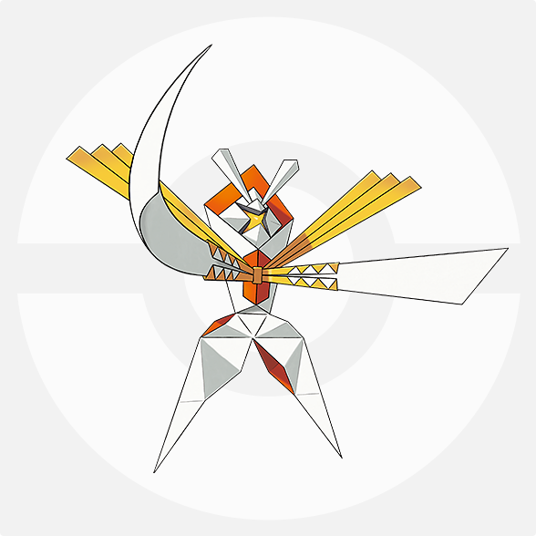
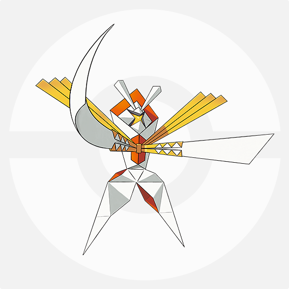

どうも、きむちです。S16の使用構築となります。このブログ内ではもちものや技などの公式単語を省略したり、
3値などの非公式単語を用います。
積ませたエースで全抜きが狙え、ある程度の耐久ポケモンを崩すこともできます。
マンダに竜舞を積ませて全抜きを狙います。A補正をかけた崩し型で相手のサイクルを崩壊させます。
| ポケモン名 | 性格 | 持ち物 | 努力値 | 技構成 |
|---|---|---|---|---|
| カバルドン | のんき | イアの実 | H228/B140/D140 | 地震・欠伸・ステロ・吹き飛ばし |
| ボーマンダ | いじっぱり | ナイト | A252/D4/S252 | 地震・捨て身・逆鱗・竜舞 |
| カミツルギ | いじっぱり | スカーフ | H4/A252/S252 | リフブレ・スマホ・聖剣・叩き |
| カプ・コケコ | おくびょう | マゴの実 | H28/B4/C132/D92/S252 | 十万・めざパ氷・瞑想・挑発 |
| ゲッコウガ | むじゃき | タスキ | B4/C252/S252 | 水手裏剣・冷ビ・悪波・岩封 |
| ミミッキュ | 意地 | 霊Z | H164/A140/B196/D4/S4 | じゃれ・影打ち・剣舞・シャドクロ |
| 攻撃側 | 技 | 防御側 | 実数値(防) | ダメージ数値 | ダメージ割合 |
|---|---|---|---|---|---|
| カバルドン | 地震 | カプ・コケコ | H145/B105 | 144~170 | 99.3~117.2% |
| カバルドン | 地震 | メガリザードンX | H153/B131 | 116~138 | 75.8~90.1% |
| メガボーマンダ | 地震 | メガメタグロス | H155/B170 | 96~114 | 61.9~73.5% |
| メガボーマンダ | 捨て身 | ランドロス(霊) | H165/B110 | 160~186 | 96.9~114.5% |
| メガボーマンダ | 逆鱗 | ボルトロス(霊) | H155/B90 | 162~192 | 104.5~123.8% |
| カプ・コケコ | 十万 | テッカグヤ | H203/D123 | 164~194 | 80.7~95.5% |
| カプ・コケコ | めざパ氷 | ランドロス(霊) | H165/D100 | 120~144 | 72.7~87.2% |
| ゲッコウガ | 岩石封じ | メガリザードンY | H153/98 | 160~192 | 104.5~125.4% |
| ゲッコウガ | 悪の波動 | メガメタグロス | H155/B130 | 108~128 | 69.6~82.5% |
| カミツルギ | リフブレ | ランドロス(霊) | H165/B110 | 118~141 | 71.5~85.4% |
| カミツルギ | 叩き落す | テッカグヤ | H204/B170 | 38~45 | 18.6~22% |
| ミミッキュ | シャドクロZ | メガメタグロス | H155/B170 | 132~156 | 85.1~100.6% |
| ミミッキュ | じゃれつく | アーゴヨン | H149/B93 | 76~91 | 51~61% |
基本的にはステロのスリップダメージ＋交代読みでダメージを蓄積させ、マンダを通します。
その時のマンダの引き先がカバルドン＋＠になります。
メタグロスが重いため選出で見えた場合はゲッコウガかカミツルギを出し削り役・ストッパーを確保します。
リザ・ガモスのストッパーとなるため岩技を採用しています。
またタスキがあるため、割れていなければアーゴヨンのストッパーにもなれます。
| TN | トモコ |
|---|---|
| 最高 | 1626 |
| 最終 | 1596 |
| 順位 | 9156 |